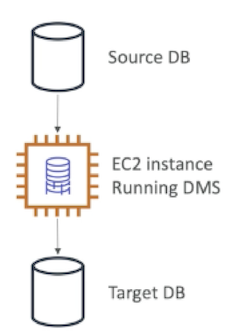
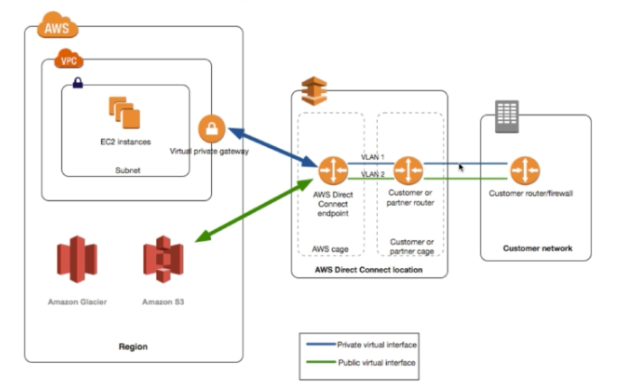
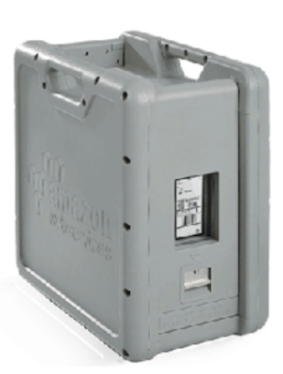
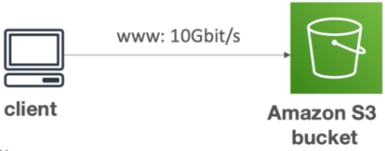
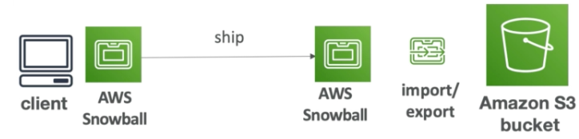
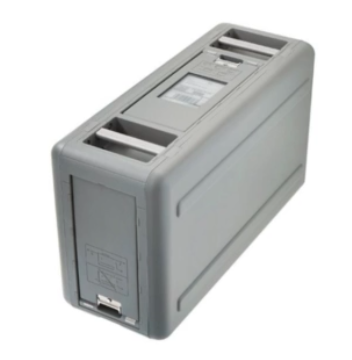
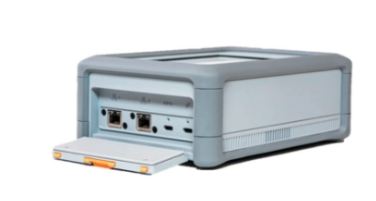
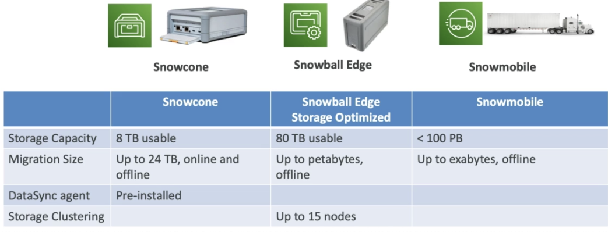
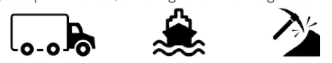
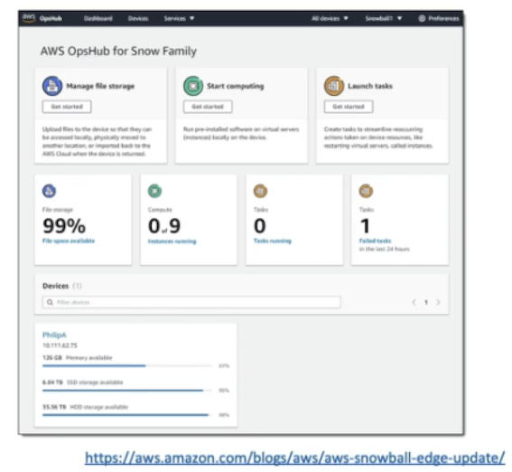

L6 Data Collection Others
1、Database Migration Service(DMS)
- Quickly and securely migrate databases to AWS, resilient, self healing
- The source database remains available during the migration
- Supports:
- Homogeneous migrations: ex Oracle to Oracle
- Heterogeneous migrations: ex Microsoft SQL Server to Aurora
- Continuous Data Replication using CDC
- You must create an EC2 instance to perform the replication tasks

1-1 DMS Resources and Targets
_SOURCES_:
- On-Premise and EC2 instances databases: Oracle, MS SQL Server MySQL, MariaDB, PostgreSQL, MongoDB, SAP, DB2
- Azure: Azure SQL Database
- Amazon RDS: all including Aurora
- Amazon S3
_TARGETS_
- On-Premise and EC2 instances databases: Oracle, MS SQL Server, MySQL, MariaDB, PostgreSQL, SAP
- Amazon RDS
- Amazon Redshift
- Amazon DynamoDB
- Amazon S3
- ElasticSearch Service
- Kinesis Data Streams
- DocumentDB
1-2 AWS Schema Conversion Tool (SCT)
- Convert your Database's Schema from one engine to another
- Example OLTP: (SQL Server or Oracle) to MySQL, PostgreSQL, Aurora
- Example OLAP: (Teradata or Oracle) to Amazon Redshift
- You can use AWS SCT to create AWS DMS endpoints and tasks.
2、Direct Connect
- Provides a dedicated private connection from a remote network to yourVPC
- Can setup multiple 1 Gbps or 10 Gbps dedicated network connections
- Setup Dedicated connection between your DC and Direct Connect locations
- You need to setup a Virtual Private Gateway on your VPC
- Access public resources (S3) and private (EC2) on same connection
- Use Cases:
- Increase bandwidth throughput - working with large data sets - lower cost
- More consistent network experience - applications using real-time data feeds
- Hybrid Environments (on premise + cloud)
- Enhanced security (private connection)
- Supports both IPv4 and IPv6
- High-availability: Two DC as failover or use Site-to-Site VPN as a failover

- Basically we see that from our customer network
- we have a router and we connect that router into a direct connect location right here which goes into a direct connect end point
- This direct connect end point is connected directly either into the public resources of AWS such as Glacier, S3,
- Or into the private resources of AWS using a virtual private gateway where we can connect to our EC2 instances in a private manner.
2-1 Direct Conned Gateway
- If you want to setup a Direct Connect to one or more VPC in many different regions (same account), you must use a Direct Connect Gateway

3、SnowBall
3-1 Snowball
- Physical data transport solution that helps moving TBs or PBs of data in or out of AWS
- Alternative to moving data over the network (and paying network fees)
- Secure, tamper resistant, uses KMS 256 bit encryption
- Tracking using SNS and text messages. E-ink ship ping label
- Pay per data transfer job
- Use cases:
- large data cloud migrations,
- DC decomission
- disaster recovery
- If it takes more than a week to transfer over the network, use Snowball devices!

3-2 Snowball Process
- Request snowball devices from the AWS console for delivery
- Install the snowball client on your servers
- Connect the snowball to your servers and copy files using the client
- Ship back the device when you're done (goes to the right AWS facility)
- Data will be loaded into an S3 bucket
- Snowball is completely wiped
- Tracking is done using SNS, text messages and the AWS console
3-3 Snowball Diagrams
Direct upload to s3

With Snowball

3-4 Snowball Edge
- Snowball Edges add computational capability to the device
- 1OOTB capacity with either:
- Storage optimized — 24 vCPU
- Compute optimized — 52 vCPU & optional GPU
- Supports a custom EC2 AMI so you can perform processing on the go
- Supports custom Lambda functions
- Very useful to pre-process the data wile moving
- Use case:
- data migration
- image collation
- IoT capture
- machine learning

3-5 Snowball Edge (for data transfers)
- Physical data transport solution: move TBs or PBs of data in or out of AWS
- Ahernative to moving data over the network (and paying network fees)
- Pay per data transfer job
- Provide block storage and Amazon S3-compatible object storage
- Snowball Edge Storage Optimized
- 80 TB of HDD capacity for block volume and 53 compatible object storage
- Snowball Edge Compute Optimized
- 42 TB of HDD canacity for block volume and S3 compatible object storage
3-6 Snowmobile
- Transfer exabytes of data ( 1 EB = 1,000 PB = 1,000,000TBs)
- Each Snowmobile has 100 PB of capacity (use multiple in parallel)
- Better than Snowball if you transfer more than 10 PB
- High security: temperature controlled, GPS, 24/7 video surveillance
3-7 AWS SnowCone
- Small, portable computing, anywhere, rugged & secure, withstands harsh environments
- Light (4.5 pounds, 2.1 kg)
- Device used for edge computing, storage, and data transfer
- 8 TBs of usable storage
- Use Snowcone where Snowball does not fit (space-constrained environment)
-
Must provide your own battery / cables
-
Can be sent back to AWS offline, or connect it to intemet and use AWS DataSync to send data

3-8 AWS Snow Family for Data Migrations

3-9 Snow-Family - Usage process
- Request Snowball devices from the AWS console for delivery
- Install the snowball client / AWS OpsHub on your servers
- Connect the snowball to your servers and copy files using the client
- Ship back the device when you're done (goes to the right AWS facility)
- Data will be loaded into an S3 bucket
- Snowball is completely wiped
4、Edge-Computing
4-1 What's Edge-Computing

-
Process data while its being created on an edge location
- A truck on the road, a ship on the sea, a mining station underground
-
These locations may have
- Limited / no intemet access
- Limited / no easy access to computing power
-
We setup a Snowball Edge / Snowcone device to do edge computing
-
Use cases of Edge Computing
- Preprocess data
- Machine learning at the edge
- Transcoding media streams
-
Eventually (if need be) we can ship back the device to AWS (for transferring data for example)
4-2 Snow Family — Edge Computing
-
Snowcone (smaller)
- 2 CPUs, 4 GB of memory wired or wireless access
- USB-C power using a cord or the optional battery
-
Snowball Edge — Compute Optimized
- 52 vCPUs. 208 GiB of RAM
- Optional GPU (useful for video processing or machine) learning)
- 42TB usable storage
-
Snowball Edge — Storage Optimized
- Up to 40 vCPUs, 80 GiB of RAM
- Object storage clustering available
-
All: Can run EC2 Instances & AWS Lambda functions (using AWS IoT Greengras）
- Long-term deployment options: 1 and 3 years discounted pricing
5、AWS OpsHub

- Historically, to use Snow Family devices, you needed a al (Command Line Interface tool)
- Today, you can use AWS op Hub (a software you install onyour computer / laptop) to manage your Snow Family Device
- Unlocking and configuring single or clustered devices
- Transferring files
- Launching and managing instances running on Snow Earn Devices
- Monitor device metrics (storage capacity, active instances on your device
- Launch compatible AWS services on your devices (ex:Amazon EC2 instances, AWS DataSync, Network Ede System (NFS)